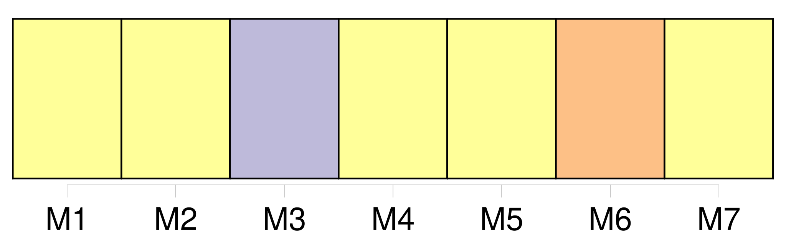
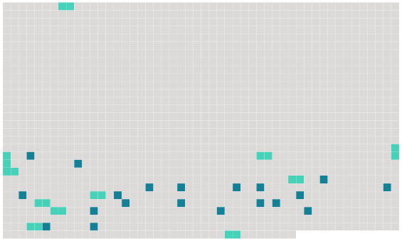

Longueur nb maillons : 31 mentions |
 |
Néanmoins, il est possible d'entendre [les girafons] en situation de stress pousser un genre de beuglement approchant celui des bovins. [38 phrases]
La girafe femelle et [le girafon] ( ou [girafeau] [1 phrases] La mise bas s'effectue debout et [le girafon] tombe de près de deux mètres de haut. Il y a des risques que [le girafon] meure à la naissance, car en tombant [il] peut se blesser, et notamment se briser la nuque, même si cela reste très rare. [1 phrases] À la naissance, [le girafon] mesure deux mètres pour un poids variant de 40 à 80 kg. [4 phrases] La girafe n'adopte [son petit] que s' [il] est capable de se tenir rapidement debout ( généralement au bout de 15 minutes ) et de stimuler la lactation. Au bout d'une heure, [il] doit tenir sur [ses] pattes pour atteindre les mamelles de [sa] mère où [il] pourra se nourrir d'un lait très gras.
Dans le cas contraire, elle [l'] abandonne ou même [le] tue. La mère se fait comprendre de [son petit] en [le] caressant avec le bout de son museau ou avec un langage sonore d'une fréquence trop élevée pour les humains.
Elle [l'] incite ainsi à la suivre et à la téter, créant ainsi le lien maternel. [Le girafon] grandit de un mètre durant la première année de [sa] vie.
À six mois, [il] approche les trois mètres et à sept ans, [il] aura [sa] taille d'adulte avec un minimum de cinq mètres. Le sevrage intervient au bout de 12 à 16 mois mais [le girafon] peut rester avec [sa] mère jusqu'à l'âge de deux ans et demi. Après cette période, [il] est gardé dans une « nurserie » qui permet à [sa] mère d'aller s'alimenter. [1 phrases] Par contre, [les jeunes] [qui] échappent à la surveillance de [leur] mère ou isolés du troupeau et les sujets affaiblis par la vieillesse, la maladie ou une blessure, peuvent être la proie de prédateurs comme les lions, les hyènes rayées, les hyènes tachetées, les léopards ou les lycaons. [1 phrases] Aux points d'eau, [les girafons] peuvent aussi être victimes des crocodiles. |
 |
Il est possible de télécharger la ressource sur la page Ortolang |
Si vous avez des questions ou vous voyez des erreurs, merci d'envoyer un mail à silvia.federzoni89@gmail.com |